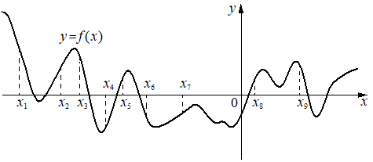

Авторский разбор и аудит предварительны; внешней экспертизы нет.
Модель автора: claude-opus-5-5 (opus; effort=low); в основных частотах: True ·
Впишите правильный ответ.
На рисунке изображён график функции На оси абсцисс отмечено девять точек: , , , , , , , , . Найдите количество отмеченных точек, в которых производная функции отрицательна.

КЭС: 4.2 Применение производной к исследованию функций на монотонность и экстремумы. Нахождение наибольшего и наименьшего значения функции на отрезке
4
| ID / вход | Действие | Результат | Локальные KC |
|---|---|---|---|
| s1 · condition | По графику определить характер монотонности функции в окрестности каждой из отмеченных точек | Функция убывает в x1, x3, x6, x9; возрастает в x2, x4, x5, x7, x8 | kc1 |
| s2 · s1 | Связать знак производной с монотонностью и подсчитать точки, где производная отрицательна | f'(x)<0 в точках x1, x3, x6, x9 — всего 4 | kc2 |
[
{
"id": "m1",
"name": "Знак производной через монотонность по графику функции",
"step_ids": [
"s1",
"s2"
]
}
]Вход: график функции и точки на оси абсцисс. Операция: установить, возрастает или убывает функция в окрестности каждой точки. Граница: точки экстремумов требуют отдельного рассмотрения.
{
"local_kc_id": "kc1",
"status": "new_candidate",
"catalog_kc_id": null,
"evidence": [
{
"ref": "step:s1:action",
"quote": "По графику определить характер монотонности функции в окрестности каждой из отмеченных точек"
},
{
"ref": "step:s1:result",
"quote": "Функция убывает в x1, x3, x6, x9; возрастает в x2, x4, x5, x7, x8"
},
{
"ref": "image:assets/bd7b9245eb33833935ea9711.png",
"region_description": "График y=f(x) с девятью пунктирными отметками x1..x9 на оси абсцисс; в x1, x3, x6, x9 кривая идёт вниз, в x2, x4 (сразу правее минимума), x5, x7, x8 — вверх"
}
],
"context_refs": [
"condition"
],
"alternatives_checked": [
{
"catalog_kc_id": "literal_9aee0783618d",
"reason": "Чтение знака по графику производной (выше/ниже оси), а здесь дан график самой функции и читается её монотонность"
},
{
"catalog_kc_id": "derivative_monotonicity",
"reason": "Вывод монотонности из знака производной, а не визуальное чтение монотонности по графику функции"
},
{
"catalog_kc_id": "graph_coordinates",
"reason": "Считывание координат точек, а не направления изменения функции"
}
],
"rationale": "Операция: визуально установить возрастание/убывание графика функции в окрестности отмеченных абсцисс. Подходящего узла каталога нет. Визуальная проверка подтверждает классификацию автора, включая x4 и x5 рядом с экстремумами.",
"proposal": {
"name": "Определять монотонность функции в точке по её графику",
"definition": "По графику y=f(x) установить, возрастает или убывает функция в окрестности заданной абсциссы; точки экстремума (горизонтальная касательная) отмечать отдельно."
},
"blocking": false,
"issue_ids": []
}Вход: характер монотонности дифференцируемой функции в точке. Операция: убывание соответствует отрицательной производной, возрастание — положительной (вне точек с нулевой производной).
{
"local_kc_id": "kc2",
"status": "new_candidate",
"catalog_kc_id": null,
"evidence": [
{
"ref": "step:s2:action",
"quote": "Связать знак производной с монотонностью и подсчитать точки, где производная отрицательна"
},
{
"ref": "step:s2:result",
"quote": "f'(x)<0 в точках x1, x3, x6, x9 — всего 4"
}
],
"context_refs": [
"step:s1:result"
],
"alternatives_checked": [
{
"catalog_kc_id": "derivative_monotonicity",
"reason": "Обратное направление: знак производной → монотонность; здесь монотонность → знак производной"
},
{
"catalog_kc_id": "literal_9aee0783618d",
"reason": "Знак производной читается с графика производной, а не выводится из монотонности функции"
},
{
"catalog_kc_id": "literal_6ad8f502588e",
"reason": "Отбор по промежутку; здесь подсчёт по знаку, тривиальная часть действия"
}
],
"rationale": "Операция: по строгому возрастанию/убыванию дифференцируемой функции в окрестности точки (не экстремум) заключить знак производной. Каталог содержит только обратную импликацию. Подсчёт четырёх точек тривиален и не выделяется.",
"proposal": {
"name": "Определять знак производной по монотонности функции",
"definition": "Для дифференцируемой функции в точке, где она строго возрастает/убывает и касательная не горизонтальна, заключить f'>0 / f'<0; точки с f'=0 отделять."
},
"blocking": false,
"issue_ids": [
"i1"
]
}[ "Точки x4 и x5 расположены близко к экстремумам; классификация как возрастание основана на визуальном чтении рисунка." ]
[
{
"id": "i1",
"kind": "boundary",
"refs": [
"step:s2:result"
],
"description": "Строгое убывание само по себе не гарантирует f'<0 (возможно f'=0 в отдельной точке); вывод опирается на визуальное отсутствие горизонтальной касательной в отмеченных точках. На ответ 4 не влияет.",
"blocking": false,
"affected_local_kc_ids": [
"kc2"
]
}
]{
"author_path": "data/annotation/runs/2026-11-07-fipi-team-bogdan108-051-150/raw/author/71BC43.json",
"auditor_path": "data/annotation/runs/2026-11-07-fipi-team-bogdan108-051-150/raw/auditor/71BC43.json",
"accepted_after_review": null
}